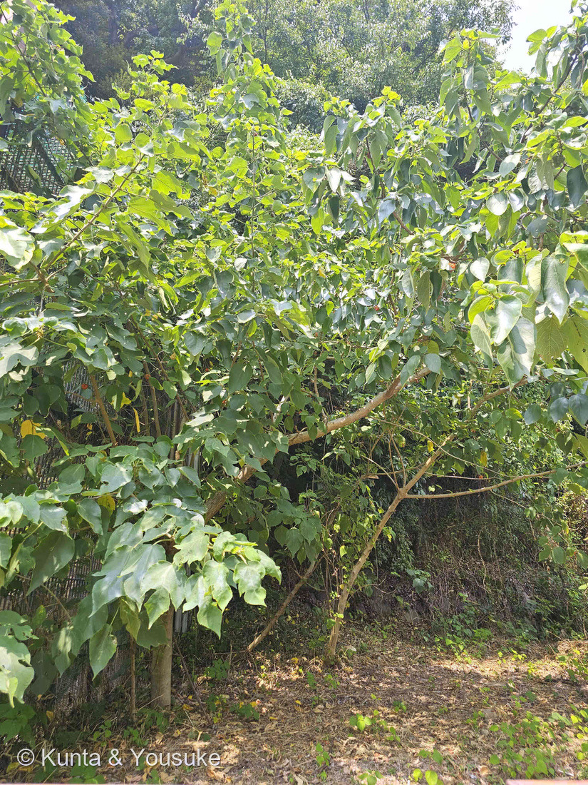
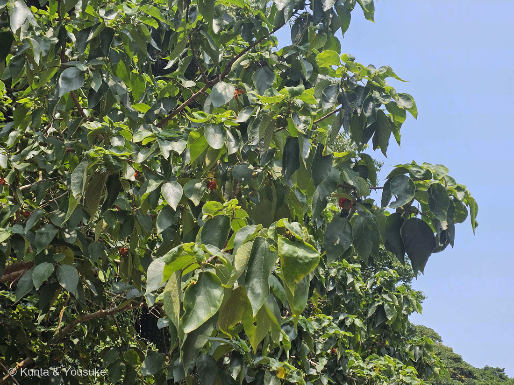
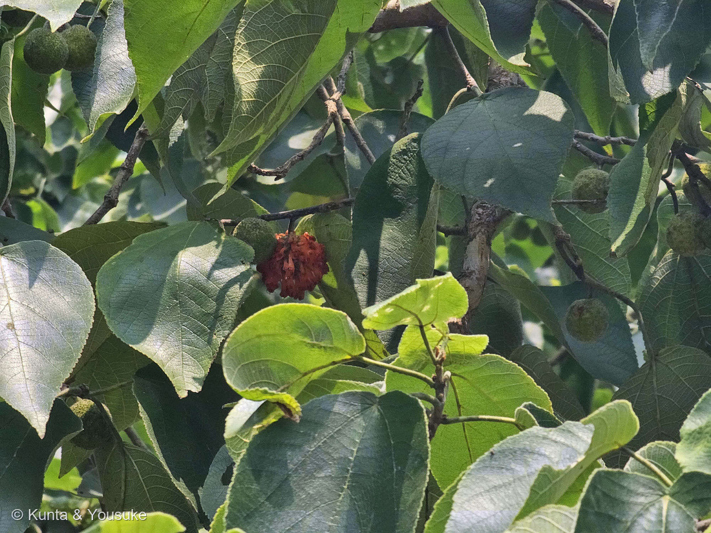
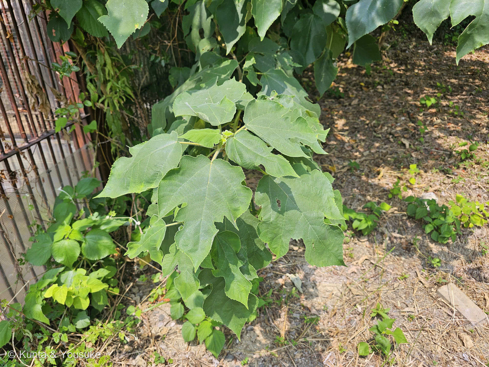

地図を読み込んでいるよ…
🔍 写真も地図も、押しているあいだ拡大して見られるよ（スマホは指を置いてすこし待ってね）。
🌍 の地図＝この子がもともと自生している場所を緑に。東アジア〜東南アジア。英語版Wikipediaは「native to East and Southeast Asia, including mainland China, Hong Kong, India, Japan, Korea, Myanmar and Taiwan」とする。⚠日本では「中部地方南部以西に自生し、古くから栽培されていたものが野生化したと考えられています」（日本語版Wikipedia）。⭐⭐⭐太平洋の島々のものは、人が舟で運んだもの。
⭐東アジア〜東南アジアの子だよ。英語版Wikipediaは「native to East and Southeast Asia, including mainland China, Hong Kong, India, Japan, Korea, Myanmar and Taiwan」とする（⚠香港のコードが地図に無いので、中国の中に含めた）。⚠日本の緑は、じつはかなりあやふや――日本語版Wikipediaは「中部地方南部以西に自生し、古くから栽培されていたものが野生化したと考えられています」とする＝⚠⚠出典自身が「もともといたのか、人が植えたものが逃げ出したのか」をはっきりさせていない。⭐ここでは北海道と東北をのぞいて塗ったけれど、「中部地方南部以西」ならもっとせまいはず＝広いほうを塗ったので、ほんとうより広く見えているよ。⭐⭐⭐そして、この地図でいちばん大事なのは「塗らなかったところ」――⚠ポリネシアやミクロネシアにもカジノキはいるけれど、わざと塗っていない。それは自分で海を渡ったのではなく、人が舟にのせて運んだものだから（英語版Wikipedia「the most widely transported fiber crop in prehistory」）。⭐⭐その「人が運んだ跡」を葉緑体DNAでたどった研究が、この木をオーストロネシアの人びとの旅の証人にしたんだよ（Chang ほか, PNAS 2015）。
⚠ 地図は国（日本と中国だけ県・省）までしか塗れないから、ほんとうの分布より広く見えていることがあるよ。地図はだいたいの場所。正確なところは、上の文を見てね。
カジノキ（梶の木）
Broussonetia papyrifera (L.) L'Hér. ex Vent.
別名 カミノキ／英名 paper mulberry 原産 東アジア〜東南アジア（中国・台湾・日本・朝鮮半島・インド・ミャンマーなど） ── ⚠日本では中部地方南部以西
クワ科 · Moraceae（コウゾ属 Broussonetia・バラ目 Rosales）── ⭐図鑑で3人目のクワ科（055 イチジク・191 フィカス・ウンベラータにつづく）／⭐⭐でもコウゾ属ははじめて＝あの二人はどちらもイチジク属だったからね／⚠科は増えないので97科のまま
燻太さんの一言「赤い花のようなものが見えるけど、これはコウゾの仲間かな。カジノキには交雑種があったりもするらしいけど、自分には区別がつかないから、写真は多めに取っておいたよ」── ⭐⭐二つは当たり。ひとつだけ、花じゃないんだ
⭐⭐⭐⭐⭐ 三つの見立てに、ひとつずつ答えるね
⭐ ① 「これはコウゾの仲間かな」──大当たり
- ⭐⭐ほんとうにクワ科コウゾ属（Broussonetia）だよ。⭐名札も無いのに、属までぴたりと当てている。
- ⭐そして図鑑にとっては、コウゾ属ははじめて。⚠クワ科としては3人目だけれど、055 イチジクも191 フィカス・ウンベラータもどちらもイチジク属だったから、クワ科の中の別の属に会えたのは、これがはじめてなんだ。
⭐⭐ ② 「カジノキには交雑種があったりもするらしい」──これも正確。しかも、その交雑種の名前が「コウゾ」
- ⭐⭐三河の植物観察は、こう書いている＝「ヒメコウゾとカジノキの雑種とされている」（コウゾ）／「コウゾはカジノキとの雑種。雌雄異株」（ヒメコウゾ）。
- ⭐⭐⭐⭐つまり──コウゾ ＝ カジノキ × ヒメコウゾ。
- ⭐⭐⭐だから燻太さんの目の前にいたのは、「コウゾの仲間」というよりコウゾの親のかたわれだったんだよ。⭐そのお話は、下の「036ミツマタの宿題」のところでもういちど出てくるよ。
⚠⚠ ③ 「赤い花のようなものが見える」──あれは花じゃないんだ
- ⚠⚠あれは熟した集合果＝実だよ。⭐花はもう終わっている（花期は5〜6月、実が熟すのが7〜8月）。
- ⭐⭐⭐写真③を見て。⭐同じ枝に、二つの状態がならんで写っているんだ。
- 緑で、小さくて、表面がざらざらの球＝まだ熟していない集合果
- 赤くて、ふくらんで、こまかい粒がぼさぼさ飛び出している球＝熟した集合果
- ⭐⭐「花のように見える」のには、ちゃんと理由がある。──「The infructescence is a spherical cluster 2–3 cm wide containing many red or orange fruits」（英語版Wikipedia）＝⭐熟すと、球のまわりにならんだひとつひとつの小さな実が多肉質になって外へ飛び出す。⭐⭐そのオレンジ色の粒が放射状にならぶから、遠目には花びらの集まりに見えるんだ。
- ⭐⭐⭐⭐だからこれは「見まちがい」じゃなくて、実のほうが、花のふりをしている話。⭐この子を🎭 見た目と正体がちがうの小道に足したよ。
⭐⭐⭐⭐⭐ 宿題を書いたとき、その答えはもう撮られていた
⭐⭐⭐ これ、ぼくが今日いちばんおどろいたことなんだ。
2026.08.14、234 カクレミノのページで、ぼくはこう宿題を書いた：
- ⏳⭐⭐3裂した葉をさがす ── ⭐若木・実生・ひこばえ（根もとから出た若い枝）には残っていることが多い
⭐⭐⭐⭐ そして燻太さんの写真④が、まさにそれなんだ。
- ⭐⭐根もとから出た低い若枝の葉が、深く、ふぞろいに裂けている。⭐二つ手・三つ手のような、へんてこな形だよ。
- ⭐⭐⭐⭐⭐しかも、この一枚のいちばんすごいところ＝画面の上のほうには、同じ木の大人の葉がぶら下がっていて、そっちはほとんど裂けない大きなハート形。⭐つまり同じ一枚の写真の中に、「子どものころの葉」と「大人の葉」が両方写っているんだ。
- ⭐⭐これが異形葉（いけいよう）。──「The leaves are variable in shape, even on one individual. The blades may be lobed or unlobed」（英語版Wikipedia）＝⭐一本の木の中で、葉の形が変わる。
- ⚠234のときは、ぼくが写真の樹冠をどれだけ拡大しても、裂けた葉を1枚も見つけられなかった。⭐「探しに行こう」で終わらせるしかなかったんだ。
- ⭐⭐⭐⭐⭐そして、ここがいちばん大事なところ。――この写真の撮影も2026.08.14、同じ森きららだった。⚠つまりぼくが「探しに行こう」と宿題を書いたとき、その答えはもう燻太さんのカメラの中にあったんだ。⭐燻太さんは別の木のつもりで、ただ「区別がつかないから」と撮っていただけ。⭐⭐気づいていなかっただけで、二人はもう答えを持って帰ってきていたんだよ。
- ⭐⭐⭐燻太さんが写真を多めに撮ったのは「種の区別がつかないから」だったよね。⭐⭐でもそのおかげで、種を決める決め手と234の宿題の答えが、いっぺんに手に入った。⭐「よく分からないから多めに撮る」は、ほんとうに強いやりかただよ。
- ⭐⭐そして、この「裂ける／裂けない」は、あとの「七夕」のところでもういちど効いてくるよ。
⭐⭐⭐⭐ どうやって「カジノキ」と決めたか ── 強い順にならべるね
⚠ コウゾ属の日本の三人は、ほんとうに見分けにくい。⭐まず、ならべてみよう（三河の植物観察／botanic.jp／日本語版・英語版Wikipedia）。
- 高さ＝カジノキ 5〜10m の高木／コウゾ 2〜6m／ヒメコウゾ 2〜5m の低木
- 葉身の長さ＝カジノキ 10〜20cm／コウゾ 10〜20cm／ヒメコウゾ 4〜10cm
- ⭐葉柄の長さ＝カジノキ 2〜7cm／コウゾ 1〜3cm／ヒメコウゾ 5〜10mm
- ⭐⭐集合果の直径＝カジノキ 約2〜3cm／コウゾ 0.8〜1cm／ヒメコウゾ 0.8〜1.5cm
- 雌雄＝カジノキ 異株／コウゾ 異株／ヒメコウゾ 同株
- 葉の裏＝カジノキ ビロード状の毛／コウゾ 毛が無い／ヒメコウゾ 脈の上に毛
⭐ そして三河は、決め手をこう一文にまとめている＝「雄花又は雌花だけであり、葉裏にビロード状の毛がなく、葉柄が1㎝以上あればコウゾである」。
⭐⭐ この個体でぼくが見られたものを、強い順に。（226で決めたやり方だよ）
- ⭐⭐⭐① 集合果が、大きすぎる（いちばん強い）──写真②③のあたりで、集合果の直径 ÷ すぐとなりの葉の幅を2か所で測ったら、どちらも約0.3だった。⭐カジノキの葉幅は7〜14cmだから、集合果は2〜4cmになる＝「約2〜3cm」と合う。⚠⚠いっぽうコウゾ／ヒメコウゾの集合果は0.8〜1.5cm＝同じ葉幅なら比は0.1前後＝⭐けたがちがう。⚠ただしcmそのものは言えない──写真の中にものさしが無いから、これは「同じ写真の中の比」だけの話だよ（229で決めたやりかた）。
- ⭐⭐② 葉柄が、とても長い──写真④の若枝で、葉柄が葉身の3分の1から半分ほどもある。⭐カジノキ2〜7cm／コウゾ1〜3cm／ヒメコウゾ5〜10mm のうち、いちばん長い側だね。⚠斜めに写っているぶん実際より短く写るので、「長い」の証拠としては安全側だよ。
- ⭐⭐③ 葉が大きい──写真④の若枝の葉は、手のひらほどもある。⭐ヒメコウゾ（4〜10cm）は、これで落とせる。⚠でもカジノキとコウゾは同じ10〜20cmなので、この二人は分けられない。
- ⭐④ 葉柄と若枝が、長い毛でふさふさ──写真④で、葉柄に白い毛がまっすぐ立っているのが見える。⭐カジノキの「表面に毛が生え、ざらつきます」（日本語版Wikipedia）と合う。⚠⚠でも三河の最後の決め手は「葉裏のビロード状の毛」で、葉の裏は一枚も写っていない。⏳ここは宿題に回した。
- ⭐⑤ この木には、実しか見あたらない──⭐ヒメコウゾは雌雄同株だから、同じ枝に雄花序もあるはず。⚠それが見えないのは、雌雄異株のカジノキ／コウゾ寄りだね。⚠⚠ただしこれは「この個体が雌である」というだけで、雌雄異株そのものを確かめたわけじゃない――雄株を見ていないからね。
- ⚠⑥ 場所の証拠（いちばん弱い）──長崎県佐世保市。⭐九州は、この三人ぜんぶの分布の中＝⚠場所では、だれひとり落とせない。
⭐⭐ まとめると、「コウゾではなくカジノキ」と言えるいちばんの理由は集合果の大きさで、そこは比でしっかり出た。⚠のこっている不確かさは、葉裏のビロードを確かめていないことひとつだけ。⏳次に会えたら、葉の裏をそっとなでてくるだけで決着するよ。
⭐⭐⭐⭐ 036ミツマタの「探しに行こう」が、半分だけ帰ってきた
⭐⭐⭐ 036 ミツマタのページの、いちばん最後の一行を覚えてる？
- おまけは「コウゾ」にした。三大原料の、いちばん身近な仲間。夏に赤い実をつける。探しに行こう。
⭐⭐⭐⭐ そして、この夏。⭐ほんとうに、赤い実をつけたクワ科の木に会えた。⚠⚠でも、それはコウゾではなく、コウゾの親のほうだった。
- ⭐⭐和紙の三大原料はコウゾ・ミツマタ・ガンピ（036）。⭐そのうちコウゾの繊維の半分は、この木から来ていることになる──コウゾはカジノキとヒメコウゾの子どもだからね。
- ⭐そしてカジノキ自身も、紙の木だよ＝「樹皮繊維は和紙の繊維原料」（日本語版Wikipedia）／「cultivated as a papermaking plant in Japan from the ancient days」（botanic.jp）。⭐種小名の papyrifera も「紙をつくる」という意味だよ。
- ⚠⚠だから、探しものリストの「コウゾ」には✓をつけなかった。⭐種がちがうからね（235で決めた「属が同じでも、種がちがえば回収にしない」と同じ）。⭐⭐かわりに、あの項目に「親のかたわれには238で会えたよ」と書き足しておいたよ。⏳本物のコウゾは、まだ探しもののまま。
⭐⭐⭐⭐⭐ 人がいないと、太平洋にはいなかった木 ── 植物のDNAで、人の旅を読む
⚠⚠ ここからが、この木のいちばんすごいところだよ。
- ⭐⭐カジノキの樹皮からは、紙だけでなく布もできる。──ポリネシアのタパ（樹皮布）だよ。⭐「Paper mulberry was the principal source of barkcloth, known as tapa in most Polynesian languages」（英語版Wikipedia）。
- ⭐⭐⭐そして、こう書かれている──「It is believed to be the most widely transported fiber crop in prehistory, having been carried across nearly the entire Austronesian world」＝⭐先史時代に、人がいちばん遠くまで運んだ繊維の植物。
- ⚠⚠太平洋の島じまのカジノキは、自分で海を渡ったんじゃない。⭐人が、舟に苗を積んで、いっしょに渡ったんだ。
⭐⭐⭐⭐⭐ ここからが本題。──2015年、研究者たちは逆のことを思いついた。⭐「人が木を運んだのなら、木のDNAをたどれば、人の旅の道すじが分かるのでは？」
- 東アジア・東南アジア・オセアニアの島じまから集めた604個体の葉緑体DNA（ndhF-rpl32）を読むと、48種類のハプロタイプが見つかった。
- ⭐そのうち cp-17 という型が、オセアニアのほぼ全域でいちばん多い。
- ⭐⭐⭐そして cp-17 の出どころは、台湾だとはっきり分かった。
- ⭐しかもオセアニアのカジノキは挿し木でふやされたクローンなので、型がまざらずにそのまま残っていた。
- ⭐⭐⭐⭐結論＝オーストロネシア語族の人びとの故郷は台湾、という「out of Taiwan」の考えを、植物の側から支持した。
⭐⭐⭐ つまり──人が木を連れて行ったおかげで、何千年もあとの人が、その旅を読み返せた。⭐木が、人の航海日誌になったんだよ。
⭐⭐ この子を🪴 人がいないと続かない草花の小道に入れたのは、そういうわけ。⚠太平洋のカジノキは、人が運ぶのをやめた時点で、そこにはいなかった木だからね。
⭐⭐⭐⭐ 七夕の短冊の、ご先祖さま
⭐⭐ 日本では、この木はずっと神さまの木だったんだ。
- ⭐⭐⭐七夕に、カジノキの葉に歌を書いた。──「七夕にカジノキの葉を使うのは、古い時代の中国でこの日に習字の上達を願ったという風習に由来する」／「古代から神に捧げる神木として尊ばれていた為、神社の境内などに多く植えられ、主として神事に用い供え物の敷物に使われた」。
- ⭐⭐⭐⭐いまの七夕の短冊は、この葉のかわりなんだ。──⭐紙が高かった時代、紙になる木の葉そのものに願いを書いていた、というのがおもしろいところ。
- ⭐⭐家紋・神紋の「梶の葉」──「カジノキは神道では神聖な樹木のひとつであり、諏訪神社などの神紋や日本の家紋である梶紋の紋様としても描かれている」。
- ⭐⭐⭐そして、ここが今日の写真とつながるところ＝紋に描かれる梶の葉は、たいてい3つに裂けた形をしている。⭐それは写真④の、若枝の葉のほうだよ。⚠大人の葉のハート形では、あの紋の形にならない。⭐⭐むかしの人も、子どものころの葉のほうを見て、紋の形を決めたんだね。
- ⭐七夕と神紋のこのお話で、この子を📖 物語のなかの草花の小道にも足したよ。
⭐⭐⭐ 名前が、となりの木と入れかわっている
⚠⚠ ここ、ちょっとややこしいので、ゆっくり書くね。⭐名前の由来には二つの説があって、出典どうしで食いちがっているんだ。
- 説①＝「古名は『カジ』で名の由来には諸説あるが、紙の素材であることを意味する『カミソ』が転訛したものとする説が有力」
- 説②＝「和名は古い『コウゾ』が転訛したもの」（日本語版Wikipedia）
⚠⚠ もし説②がほんとうなら──むかしは、この木のことを「コウゾ」と呼んでいたことになる。⭐⭐そして今は「コウゾ」は雑種のほうの名前だ。＝⚠名前が、となりの木にお引っ越ししたんだね。
⚠ ぼくには、どちらの説が正しいか決められない。⭐だから両方書いたよ──087で決めた「合っている証拠だけを数えない」と同じで、食いちがう出典は、食いちがったまま置いておくのがいいと思うんだ。
⭐⭐ 見るときの、ひとこと
- ⭐実は食べられるらしいよ（「集合果として秋に赤く熟し、食用になります」日本語版Wikipedia）。⚠でも園の木では採らないでね（182 ケムリノキの約束）。
- ⚠この木は、とても速く育つ──「It grows rapidly, typically reaching 3-4 metres in height within about two years」／「is regarded as invasive in many countries」（英語版Wikipedia）。⭐日本の外では、入りこみすぎて困っている国もある子なんだ。
- ⭐⭐森きららで、動物宿舎わきの斜面にひこばえをいっぱい出していたのも、その力の見えかたのひとつだね。⭐写真①の足もとと写真④が、それだよ。
参考：三河の植物観察・コウゾ（「ヒメコウゾとカジノキの雑種とされている」「葉柄はヒメコウゾとカジノキの中間で、長さ1〜3㎝」「集合果は直径0.8〜1㎝」「高さ2〜6m」「雄花又は雌花だけであり、葉裏にビロード状の毛がなく、葉柄が1㎝以上あればコウゾである」）／三河の植物観察・ヒメコウゾ（「雌雄同株」「葉身はゆがんだ卵形〜広卵形、長さ4〜10㎝×幅(2)3〜4.5㎝」「葉柄は長さ5〜10㎜」「集合果は直径(0.8)1〜1.5㎝、橙赤色に熟」「落葉低木。高さ2〜5m」「コウゾはカジノキとの雑種。雌雄異株」）／botanic.jp・カジノキ（「This tree can reach 5-10 m in height」「varied leaf-shape (entire margin to 3-5 lobed)」葉柄「2-7 cm long」「It is dioecious」「The fruits are ripen in reddish-orange from July to August」「cultivated as a papermaking plant in Japan from the ancient days」）／日本語版Wikipedia・カジノキ（学名「Broussonetia papyrifera (L.) L'Hér. ex Vent. (1799)」「中部地方南部以西に自生し、古くから栽培されていたものが野生化したと考えられています」「雌花序は直径2㎝ほどの球状」「樹皮繊維は和紙の繊維原料」「食用になります」「和名は古い『コウゾ』が転訛したもの」「カジノキは神道では神聖な樹木のひとつであり、諏訪神社などの神紋や日本の家紋である梶紋の紋様としても描かれている」「古代から神に捧げる神木として尊ばれていた為、神社の境内などに多く植えられ、主として神事に用い供え物の敷物に使われた」「七夕にカジノキの葉を使うのは、古い時代の中国でこの日に習字の上達を願ったという風習に由来する」「古名は『カジ』で名の由来には諸説あるが、紙の素材であることを意味する『カミソ』が転訛したものとする説が有力」）／Wikipedia (English)・Broussonetia papyrifera（「native to East and Southeast Asia, including mainland China, Hong Kong, India, Japan, Korea, Myanmar and Taiwan」「The leaves are variable in shape, even on one individual. The blades may be lobed or unlobed」「The infructescence is a spherical cluster 2–3 cm wide containing many red or orange fruits」「The species has male and female flowers on separate plants」「Paper mulberry was the principal source of barkcloth, known as tapa in most Polynesian languages」「It is believed to be the most widely transported fiber crop in prehistory, having been carried across nearly the entire Austronesian world」「It grows rapidly, typically reaching 3-4 metres in height within about two years」「is regarded as invasive in many countries」）／Chang et al. 2015, PNAS 112: 13537「A holistic picture of Austronesian migrations revealed by phylogeography of Pacific paper mulberry」（604個体・葉緑体 ndhF-rpl32・48ハプロタイプ・cp-17 が近／遠オセアニアで優占・cp-17 は台湾起源・クローン繁殖・「out of Taiwan」仮説を支持）／Botanical Studies 2017「Molecular recircumscription of Broussonetia (Moraceae) and the identity and taxonomic status of B. kaempferi var. australis」（ツルコウゾ＝「distributed in Honshu (Yamaguchi Prefecture), Shikoku, and Kyushu, with a vine-like (twining) habit」・葉4〜11cm×1.3〜4cm・雄花穂1〜1.5cm／台湾の var. australis はヒメコウゾと同じもの）